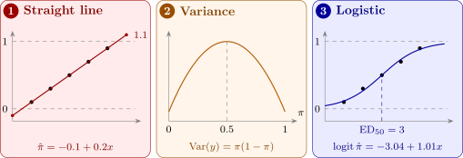

11.1 Binary responses and the logistic model
Let \(y_i = 1\) if observation \(i\) is a “success” and \(0\) otherwise, with \(P(y_i = 1) = \pi _i\). Then \(E(y_i) = \pi _i\) and \(\operatorname {Var}(y_i) = \pi _i(1 - \pi _i)\). Fitting \(y_i = \beta _0 + \beta _1x_i + \varepsilon _i\) by least squares, the linear probability model, runs into three problems, shown in Figure 23:
- (1)
- the fitted line leaves \([0, 1]\), giving impossible “probabilities”;
- (2)
- the variance \(\pi _i(1 - \pi _i)\) changes with the mean, so the constant-variance assumption fails;
- (3)
- the errors take only two values for each \(x\), so they are far from normal.
The logistic regression model avoids the first two problems by modelling a transformation of \(\pi \): \[ \pi = \frac {e^{\eta }}{1 + e^{\eta }} = \frac {1}{1 + e^{-\eta }}, \qquad \eta = \beta _0 + \beta _1x_1 + \dots + \beta _kx_k = \mathbf {x}^\top \boldsymbol \beta . \] Solving for \(\eta \), \[ \eta = \log \frac {\pi }{1 - \pi } , \] the logit or log-odds of \(\pi \). Whatever the value of \(\eta \), \(\pi \) lies strictly between \(0\) and \(1\), and as \(\eta \) increases, \(\pi \) traces an S-shaped curve. The variance is dealt with by fitting by maximum likelihood, which uses the binomial distribution directly, instead of least squares.
Odds and odds ratios
The odds of success are \(\pi /(1 - \pi )\): odds of \(3\) mean success is three times as likely as failure, \(\pi = 0.75\). The logistic model says that the log-odds are linear in the regressors, so when \(x_j\) increases by one unit and the others are held fixed, the log-odds increase by \(\beta _j\) and the odds are multiplied by \[ \frac {\text {odds at } x_j + 1}{\text {odds at } x_j} = \frac {e^{\eta + \beta _j}}{e^{\eta }} = e^{\beta _j} , \] the odds ratio. It is the same at every value of \(x_j\), which is what makes it the natural summary of a logistic regression. An odds ratio above \(1\) means \(x_j\) raises the probability of success; below \(1\), lowers it.

Questions on this section
Stuck on something here? Ask below and it stays attached to this topic.